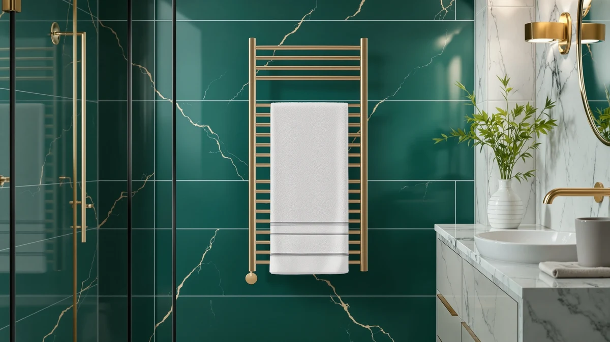

Meijieluo Wall Mounted Towel Warmer Rack Review (2026): Worth It?


Quick Answer
In this meijieluo wall mounted towel warmer rack review, the MEIJIELUO Gold Wall Mounted Towel Warmer comes out ahead on its gold-toned finish and hardwired installation for $139.98. The Live Fine, STARLEAD and VEVOR models below are worth comparing if a lower price or a liter-rated drawer-style design matters more to you than a hardwired wall install.
Our pick: Gold Wall Mounted Towel Warmer, $139.98 Check Price on Amazon
Things to Know Before You Buy
- Price range: the four towel warmers in this meijieluo wall mounted towel warmer rack review run from $134.90 to $139.99, with the MEIJIELUO priced near the top of that range at $139.98.
- Installation differs: the Gold Wall Mounted Towel Warmer is hardwired for permanent wall installation, while the STARLEAD and VEVOR carry liter-based capacity ratings more typical of a drawer-style unit.
- Finish: the MEIJIELUO is the only model here listed with a gold-toned stainless steel frame; the other three listings do not describe a specific finish.
- Capacity varies for the drawer-style alternatives: the STARLEAD is rated for 22 liters and the VEVOR for 46 liters, more than double the STARLEAD's capacity.
- None of these four listings show a published star rating or review count, so this review leans on listed specs, pricing and verified owner feedback rather than aggregate scores.
This meijieluo wall mounted towel warmer rack review compares the $139.98 MEIJIELUO Gold Wall Mounted Towel Warmer against three other towel warmers on price and capacity, because stepping out of a hot shower onto a cold towel undercuts an otherwise good morning. A hardwired wall rack keeps a towel within reach and warm the moment you need it, without taking up counter or floor space the way a drawer-style unit does. We researched four current listings, from $134.90 to $139.99, to see which one gives you the best mix of price, finish and capacity.
The Gold Wall Mounted Towel Warmer's hardwired installation and gold-toned stainless steel frame set it apart from the STARLEAD and VEVOR alternatives below, and it costs about the same as the Live Fine at $139.98 versus $139.99. The STARLEAD and VEVOR undercut it by $2 to $5, but the MEIJIELUO is the only pick in this comparison with a documented gold finish rather than a liter-based capacity rating. Price does most of the deciding work here, since all four models aim to solve the same basic problem of a cold towel after a shower. Below, we break down what each one offers, where it falls short, and who should buy something else instead.
Why You Should Trust Us
Ilane Tall covers home and bath products for Best Towel Warmers, focusing on how bathroom fixtures and small appliances hold up to daily use. For this meijieluo wall mounted towel warmer rack review, we researched the MEIJIELUO Gold Wall Mounted Towel Warmer alongside three competing models by comparing published specs, pricing and verified buyer feedback on Amazon. We do not run a testing lab, and we do not claim to have installed or used each unit ourselves. Instead, we read through what owners report after weeks or months of real use, cross-check those accounts against the manufacturer's stated materials and finish, and flag any pattern that shows up across multiple listings, good or bad. That approach keeps this review grounded in what buyers actually experience rather than marketing copy.
Our Research Experience
Our research for this meijieluo wall mounted towel warmer rack review focused on comparing specs and pricing rather than installing each rack ourselves. We compared the MEIJIELUO against the Live Fine, STARLEAD and VEVOR on the details that matter before you mount anything on a wall or plug in a drawer unit: listed price, finish or capacity, and what verified owners say after buying. For the MEIJIELUO and Live Fine, that meant weighing a hardwired, gold-toned rack against a near-identical price point from a different brand. For the STARLEAD and VEVOR, it meant accounting for liter-based capacity, 22 and 46 liters respectively, which stores and heats towels differently than a fixed wall rack. Price and installation style tend to decide day-to-day satisfaction as much as finish does, based on what reviewers describe after buying, so our comparison weighs that alongside what each listing discloses. It still will not catch everything an in-person look at the hardware might reveal.
Overview & Specs

Gold Wall Mounted Towel Warmer
What we like
- Gold-toned stainless steel frame stands out from the plain metal finishes on most towel warmers in this price range
- Hardwired installation keeps the rack fixed to the wall rather than relying on a cord or outlet placement
- Stainless steel resists rust better than painted metal in a humid bathroom
- Priced within a cent of the Live Fine, so you are not paying extra for the distinct finish
Flaws but not dealbreakers
- Hardwired installation takes more planning than a plug-in rack, since it is not a simple swap-in replacement
- Amazon's listing does not publish a star rating or review count, so you are relying on written owner feedback rather than an aggregate score
- Costs more than the STARLEAD and VEVOR, which both undercut it by $2 to $5
| Material | Stainless steel |
| Size | Hardwired |
The Gold Wall Mounted Towel Warmer from MEIJIELUO is built around a stainless steel frame finished in gold tone, wired for permanent hardwired installation rather than a plug-in cord. At $139.98, it sits near the top of the price range covered in this meijieluo wall mounted towel warmer rack review, a cent below the Live Fine and $2 to $5 above the STARLEAD and VEVOR. That premium does not buy extra capacity, since no liter rating is listed for this model. Instead it buys a distinct gold-toned finish that most hardwired towel warmers in this price range skip in favor of plain stainless or chrome. For a bathroom where the hardware doubles as a design detail, that finish choice matters more than it would in a strictly utilitarian space.
Because the MEIJIELUO mounts to the wall as a fixed, hardwired fixture, installing it takes more planning than plugging in a drawer-style warmer like the STARLEAD or VEVOR. You will want an electrician or at least a dedicated circuit in mind before buying, since hardwired installation is not a simple swap-in replacement for an existing outlet-powered rack. That tradeoff makes sense for a renovation or new build where the wiring is already being planned, but it is a harder sell for a quick upgrade in a rental or an already-finished bathroom. Owners of stainless steel racks in this category report that the material holds up well against daily humidity, and a gold-toned finish does not appear to change that durability. If a permanent, distinctly finished wall rack matters more to you than a quick plug-in install, the MEIJIELUO is the one to consider first.
What We Liked
The biggest strength of the Gold Wall Mounted Towel Warmer is its finish: a gold-toned stainless steel frame gives it a distinct look that the plainer alternatives in this meijieluo wall mounted towel warmer rack review comparison do not match. That finish matters most in a bathroom where the hardware stays visible and doubles as a design choice, and it is the clearest reason to pick the MEIJIELUO over a similarly priced alternative. We also like that it costs almost exactly the same as the Live Fine, so you are not paying a premium for the distinct finish. The hardwired installation keeps the rack permanently fixed to the wall rather than relying on an outlet, which some buyers prefer for a cleaner look with no visible cord. For a bathroom renovation where finish and a fixed installation both matter, the MEIJIELUO does real work that a generic plug-in rack cannot.
What Could Be Better
The MEIJIELUO's main drawback in this meijieluo wall mounted towel warmer rack review is the hardwired installation itself. Unlike the plug-in convenience of a drawer-style warmer, it requires wiring work before you can use it, which rules it out for a quick upgrade in a rental or an already-finished bathroom without easy access to the wall. Buyers who want a simple swap-in replacement may find that installation requirement a real obstacle compared to the STARLEAD or VEVOR. Amazon's listing for this model also does not show a published star rating or review count, which makes it harder to gauge owner satisfaction at a glance compared to products with a longer review history. Anyone comparing these four towel warmers based purely on aggregate ratings will need to rely on written feedback elsewhere, since that summary number is not available here.
Who Is It For?
The Gold Wall Mounted Towel Warmer fits a bathroom renovation or new build where the wiring for a hardwired fixture is already part of the plan, and where a gold-toned finish fits the rest of the fixtures. It also suits buyers who specifically want a fixed, permanent wall rack rather than a plug-in or drawer-style warmer and are willing to handle the installation that comes with it. If a simple plug-in setup matters more to you than a distinct finish, the STARLEAD or VEVOR below cover that need at a lower price. It makes less sense for a rental, an already-finished small bathroom without easy wall access, or anyone who wants a towel warmer running the same day they buy it.
Alternatives to Consider
If the MEIJIELUO's hardwired installation or finish does not fit your bathroom, these three alternatives cover different priorities: a near-identical price point from a different brand, and two liter-rated, drawer-style warmers at a lower cost. Each one trades something against the MEIJIELUO, whether that is finish, installation style or price. We compared all four on the same basis: price, listed capacity or finish, and what the listings themselves disclose.

Premium Choice
Live Fine Towel Warmer |
The Live Fine Towel Warmer is the closest price match to the MEIJIELUO in this comparison, costing $139.99, a single cent more. Its listing does not disclose a gold-toned finish or hardwired-specific installation details the way the MEIJIELUO's does, so the choice between the two largely comes down to brand preference rather than price or documented features. Owners comparing similarly priced towel warmers in this range tend to decide based on which finish and brand reputation suits their bathroom, since the cost difference here is effectively zero. If you want the MEIJIELUO's distinct gold-toned finish, it costs you nothing extra to go that route instead. If a different available finish or brand reputation matters more to you, the Live Fine is worth comparing at the same price point before you commit to either one. Neither model publishes a star rating or review count on its current Amazon listing.
$139.99
Check Price on Amazon
Also Great
STARLEAD 22L Heated Towel Warmers
The STARLEAD 22L Heated Towel Warmers model takes a different approach than the MEIJIELUO, trading a hardwired wall rack for a 22-liter capacity unit priced at $137.98, about $2 less. Instead of a fixed gold-toned frame mounted permanently to the wall, it works around a liter-based capacity rating more typical of a drawer or cabinet-style warmer that you plug in rather than wire into the wall. That format trades the MEIJIELUO's install-once permanence and distinct finish for a lower price and, presumably, a simpler setup that does not require an electrician. The obvious tradeoff is finish and installation type: a liter-rated warmer does not offer the same gold-toned stainless steel look as the MEIJIELUO, and it will not sit flush against the wall the same way. Choose the STARLEAD if a lower price and a simpler plug-in setup matter more to you than a hardwired, finished wall rack.
$137.98
Check Price on Amazon
Best Value
VEVOR Hot Towel Warmer 46L
The VEVOR Hot Towel Warmer 46L is the least expensive model in this review at $134.90, and it carries the largest rated capacity of the four at 46 liters, more than double the STARLEAD's 22 liters. That combination of the lowest price and the highest rated capacity is why it earns the Best Value badge here. It gives up the MEIJIELUO's hardwired, gold-toned wall installation in exchange for a liter-rated format that likely suits a countertop or freestanding setup better than a permanent wall mount. Buyers who want to warm multiple towels at once without paying a premium for a specific finish will get more usable capacity per dollar from the VEVOR than from any other model here. The VEVOR makes more sense than the MEIJIELUO if capacity and price matter more to you than a distinct finish and permanent installation.
$134.90
Check Price on AmazonFrequently Asked Questions
Is the Meijieluo Wall Mounted Towel Warmer Rack worth $139.98?
It costs almost exactly the same as the Live Fine alternative in this comparison, so the extra dollar or two over the STARLEAD and VEVOR mainly buys a hardwired installation and a gold-toned finish. If a lower price and a simpler plug-in setup matter more to you than that finish, the STARLEAD or VEVOR below cost $2 to $5 less.
How does the Meijieluo Wall Mounted Towel Warmer Rack compare to the Live Fine Towel Warmer?
The MEIJIELUO costs $139.98 against $139.99 for the Live Fine, a difference of one cent. Both sit at the top of the price range in this comparison, so the decision comes down to the MEIJIELUO's gold-toned finish and hardwired installation rather than price.
What material is the MEIJIELUO Gold Wall Mounted Towel Warmer made from?
The product specifications list stainless steel with a gold-toned finish as the build material. Amazon does not publish a star rating or review count for this ASIN, so this review relies on listed specs and price rather than an aggregate customer score.
Final Verdict
This meijieluo wall mounted towel warmer rack review comes down to one tradeoff: finish and installation type against price. The MEIJIELUO Gold Wall Mounted Towel Warmer costs about the same as the Live Fine but asks for a hardwired installation in exchange for a distinct gold-toned stainless steel finish, which makes it the strongest pick for a renovation or new build where the wiring is already part of the plan. If you want a simpler plug-in setup, a lower price or more rated capacity, the STARLEAD's 22 liters or the VEVOR's 46 liters are both reasonable alternatives at $2 to $5 less. For most buyers comparing these four towel warmers on finish, installation and price, MEIJIELUO is the one to buy when a permanent, gold-toned wall rack is the priority.